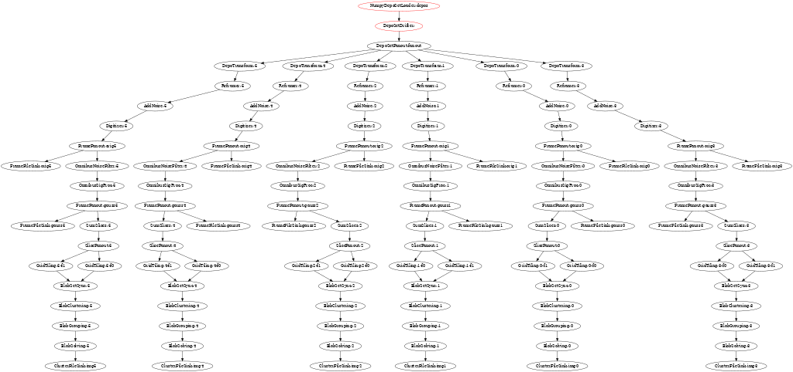

Releases 15, 16 and 17
Releases 0.15, 0.16 and 0.17 (in prep) come with some changes worth mentioning. So, here we mention them. At length….
Some changes are "breaking" and others provide new, better ways to do things. Many are cleanups which were needed for a while. As 0.17 is not technically cut, it may have additional changes. So, sit back and read about some of the improvements that you may not yet have learned about.
Release 0.15
We start with 0.15 made June 2021. This release was actually motivated by upgrades to Boost and TBB that Fermilab wanted to apply to art and LArSoft but it also collected a lot of prior development after 0.14 from May 2020.
Starting then and due to backwards incompatible changes in TBB, WCT now begins to track minimum versions on some requirements:
- TBB (oneAPI) 2021.1.1
- Boost 1.75.0
As these may change we will strive to keep the list in the main README up to date.
This release also brought
- Support for Jsonnet "top level arguments" (TLA) which we now
recommend to "inject" external information instead of the previously
used
std.extVar()idiom. - Support for the ICARUS and SBND detectors.
- Increased flow graph fanout sizes.
- JSON and Numpy I/O for depos and frames.
- Many other smaller features and bug fixes.
Release 0.16
This release is largely a cleanup, made 17 Aug 2021.
- Signal-ROI refinement finding may be excluded from sigproc (backported to 0.14.1).
- Switch from Jsonnet's C++ API to the C API and the Go implementation.
- Fix out-of-order problems with
TbbFlow. - Add support for streaming I/O via
boost::iostreamsand a newtarbased stream filter.
More details on these follow.
Go Jsonnet
The C Jsonnet library (libjsonnet.so) is essentially unoptimized. It
is easy to create WCT configuration that can take many seconds, even
minutes to parse. On the other hand, the Go version (libgojsonnet.so)
is well optimized. What may take minutes for the C version to consume
takes a few hundred milliseconds for the Go version.
The Go library is not ABI compatible but thankfully it is API compatible. In principle the C++ API could be used to access either the C/C++ version or the Go/C++ version. However, problems were uncounted and it was simpler to drop WCT down to the C API.
At this point, while the Go version is not required, it is strongly recommended. In particular, the WCT team will not work on any configuration speed issues that are not reproduced with the Go version.
Like the C version, the Go version build is not totally polished and
Go is not a common compiler in our ecosystem so here are some brief
instructions to build. It assumes the install target is /usr/local
(such as in this Dockerfile) so adjust to fit your own desired install
prefix.
$ exportg JSONNET_VERSION=0.17.0
wget -O /usr/include/libjsonnet.h \
https://raw.githubusercontent.com/google/jsonnet/v${JSONNET_VERSION}/include/libjsonnet.h
git clone https://github.com/google/go-jsonnet.git
cd go-jsonnet
git checkout v${JSONNET_VERSION}
go build ./cmd/jsonnet
go build ./cmd/jsonnetfmt
go build ./cmd/jsonnet-deps
CGO_CXXFLAGS="-std=c++17 -Wall -I/usr/local/include" \
go build -o libgojsonnet.so -buildmode=c-shared ./c-bindings
cp libgojsonnet.h /usr/local/include/
cp libgojsonnet.so /usr/local/lib/
cp jsonnet jsonnetfmt jsonnet-deps /usr/local/bin/
WCT build has added support to use the Go version of the library:
$ ./wcb configure \ --with-jsonnet=/usr/local \ --with-jsonnet-libs=gojsonnet \ [ ... ]
TbbFlow out-of-order
We got something of a surprise to start seeing out-of-order data on
TbbFlow flow graph edges. This ended up being due to several issues
related to confusion over details of how TBB's flow_graph works with
respect to concurrency and buffering.
- We had many nodes configured to use unlimited concurrency and which should not have been.
- The TBB
split_nodethat underpins every "fanout" node has unlimited concurrency. This can not be changed but more importantly it was not realized to be the case. - Despite the TBB documentation, the input buffering of
function_nodeis not a FIFO and is an undocumented source of out-of-order (which apparently others have already stumbled upon).
The solutions include making concurrency of all nodes, where possible, be "serial". We may come back to this at some point to allow more concurrency but so far we can do the simple thing and still fill out more threads than typically are available.
To solve the not-a-FIFO buffer problem, TbbFlow will now append
sequencer_node to existing nodes. To give this fodder, a sequence
number is now combined with the normal data payload that is passed on
TbbFlow edges. All of this happens in TbbFlow and developers of
individual INode components need not change anything.
After figuring out the problem, one mystery was why this had not come to bite us earlier. The reasons are likely some mix of:
- Though we have tested
TbbFlowin the past, its use is increasing as we attempt ever larger jobs and higher thread usage. These jobs are reaching new regions of "configuration phase space" and that gets us to: - The out-of-order problem will not happen, or at least is very rare, unless we, in a sense, "over provisions" TBB with "too many" threads. Eg, a ProtoDUNE-SP job usually has 6 pipelines providing the main bottleneck. Providing 8 threads allows out-of-order while fewer threads do not. Parts of these jobs will have otherwise idle threads.
- Fast multi-object output from a component also seems to be correlated with the out-of-order problem. This happens with short one "event" jobs which then cause a component to emit an output very quickly followed with an EOS. This increases the chance that the buffer in a succeeding node will gain two objects and thus have a chance to pick the "later" one instead of the desired "earlier" one.
In any case, these problems seem now to be solved and one can safely
use multi-threading. Understanding and fixing this began in 0.16 but
is complete in 0.17. So, best not use 0.16 if TbbFlow is needed.
Pgrapher is of course totally unaffected. (But has other performance
issues fixed in 0.17).
Streaming IO
WCT already used boost::iostreams to read our somewhat large .json.bz2
configuration "data" files. This release adds powerful
boost::iostreams filters that lets the tar codec be used. It also
adds a new Numpy (.npy file) codec (the existing cnpy is still
available). Both of these new codecs are implemented from scratch as
C++ header-only libraries part of the custard project.
Together, they solve some problems related to saving data beyond the
various maximum sizes imposed by cnpy (and really by its ZIP format).
They also give a powerful way to read and write any stream which is
composed of individual files. Components have been developed to make
use of this streaming including I/O for depos, frames and clusters.
See the *File{Sink,Source} components in sio. Work on these extend
into 0.17.
Not considered part of the WCT release cycle, but wire-cell-python
also sees updates to make transparent use of .npy-in-.tar files
(compressed or not) in symmetry with standard .npz Numpy files.
Release 0.17
Hot on the tail of 0.16, we are soon making 0.17. It is not yet officially cut but we will ignore that minor detail and describe many useful things it brings. Besides finishing out-of-order fixes and streaming I/O components mentioned above this release brings:
- A version string!
- Logging improvements.
- Removal of vestigial
python/sub-directory. - A "batched"
DepoSetDrifterand loader. - Graph execution tracing in
TbbFlow.
Continue reading for details about these items.
Version string
A long missing feature of WCT is to know what version it is. A version string is now provided which is based on the state of the git repository from which WCT was built. It will not be well defined if building from a directory outside of git's control. When built from source managed by git the output of:
git describe --tags
gets baked in to libWireCellUtil.so (see top of wscript). This
version string can be recovered on the command line:
$ wire-cell --version 0.16.0-19-gfa04dd3
Applications using WCT, may get the version string from the same place
that wire-cell CLI does:
WireCell::Main;
std::cerr << Main.version() << std::endl;
Logging improvements
In the course of debugging the out-of-order problem described above, logging was shown to be very inadequate. Two major problems existed:
- Variability in log line format made it difficult to understand bigger picture.
- Lack of individual node identity was a source of degeneracy.
Given the concurrent nature of the data flow graph execution with
TbbFlow and the out-of-order problem being worked on these problems
added up to a real mess! it was a mess!
To fix this, the following changes were made:
- A new
INamedinterface was introduced as a way to tell components their instance names. - A new
Aux::Loggerintermediate class providesINamedas well as a log object which formats messages consistently with type and instance names. - Additions to low level
spdloghandling related to making distinct sinks in order to support different format patterns.
To add benefit, all components need the following modifications:
- Add
Aux::Loggerto the component inheritance. Call the new parent class constructor as illustrated:
class MyComponent : public Aux::Logger, ... {};
MyComponent::MyComponent(...)
// shows as "[ mygrp ] <MyComponent:instancename> ..."
: Aux::Logger("MyComponent", "mygrp")
, ... { ... }
- Replace any locally constructed log objects to the one provided by
the new parent as the protected data member named
log. - Remove from the log message itself any identifiers related to type
or instance. They will simply become cluster and are now redundant
with a standard prefix given to each log line by the
Aux::Logger.
At the same time, we also now try to format information in the log line body in a more consistent manner using phrases of "key=value" like:
log->debug("call={} value={}", m_count, m_myval);
This make it much easier to grep logs for values. The result allows
for rational log queries to pull out portions of the graph.
And, finally, it is especially helpful to revisit configuration to
rationalize the component instance names. It is recommended that were
possible give an instance name which is simply the number associated
with the pipeline branch (usually the APA ID number). In some cases
this would produce type+instance pairs that are degenerate and
something more must be provided in the instance name. One such case
is when multiple FrameFileSink components are on the same pipeline and
for these it is suggested to use an instance name matching the frame
"tag" name (eg, "orig1", "gauss5").
Here is an example of finding logs related to APA 0's pipeline executing sim, sigproc and 3D imaging.
$ grep ':0>' log.txt ... [09:54:26.529] D [ gen ] <DepoTransform:0> call=0 frame=0 ntraces=4887 [09:54:26.691] D [ gen ] <Reframer:0> call=0 frame=0 all traces in: 4887 out tag: "" [09:54:27.065] D [ gen ] <AddNoise:0> call=0 frame=0 2560 traces [09:54:27.841] D [ gen ] <DepoTransform:0> EOS at call=1 [09:54:27.841] D [ gen ] <Reframer:0> EOS at call=1 [09:54:27.841] D [ gen ] <AddNoise:0> EOS at call=1 [09:54:28.698] D [ gen ] <Digitizer:0> call=0 traces=2560 frame=0 outtag="orig0" [09:54:28.698] D [ gen ] <Digitizer:0> see EOS at call=1 [09:54:31.258] D [sigproc ] <OmnibusNoiseFilter:0> call=0, frame=0, ntraces=2560, nticks=6000 intag=orig0 outtag=raw0 [09:54:31.259] D [sigproc ] <OmnibusNoiseFilter:0> EOS at call=1 [09:54:31.259] D [sigproc ] <OmnibusSigProc:0> OmnibusSigProc: nticks=6000 tbinmin=0 tbinmax=6000 [09:54:31.316] D [sigproc ] <OmnibusSigProc:0> plane index: 0 input data identifies 0 bad regions [09:54:35.145] D [sigproc ] <OmnibusSigProc:0> plane index: 1 input data identifies 0 bad regions [09:54:38.329] D [sigproc ] <OmnibusSigProc:0> plane index: 2 input data identifies 0 bad regions [09:54:40.939] D [sigproc ] <OmnibusSigProc:0> save_data plane index: 0, Qtot=147524624 added 800 traces to total 800 indices:[0,799] [09:54:41.234] D [sigproc ] <OmnibusSigProc:0> save_data plane index: 0, Qtot=141124311 added 800 traces to total 800 indices:[800,1599] [09:54:41.917] D [sigproc ] <OmnibusSigProc:0> save_data plane index: 1, Qtot=138288987 added 800 traces to total 800 indices:[1600,2399] [09:54:42.225] D [sigproc ] <OmnibusSigProc:0> save_data plane index: 1, Qtot=133841197 added 2400 traces to total 1600 indices:[800,3199] [09:54:42.834] D [sigproc ] <OmnibusSigProc:0> save_data plane index: 2, Qtot=121136654 added 960 traces to total 960 indices:[3200,4159] [09:54:43.340] D [sigproc ] <OmnibusSigProc:0> save_data plane index: 2, Qtot=118093358 added 4320 traces to total 2560 indices:[800,5119] [09:54:43.405] D [sigproc ] <OmnibusSigProc:0> call=0 produce 5120 traces: 2560 wiener0, 0 decon_charge0, 2560 gauss0, frame tag: sigproc [09:54:43.412] D [sigproc ] <OmnibusSigProc:0> EOS at call=1 anode=0 [09:54:43.521] D [ img ] <SumSlice:0> frame=0, make 1464 slices in [0,1499] from 1464 [09:54:43.535] D [ img ] <SumSlice:0> EOS [09:54:43.596] D [ glue ] <SliceFanout:0> sending out 2 EOSes [09:54:43.787] D [ glue ] <BlobSetSync:0> EOS [09:54:46.697] D [ img ] <BlobClustering:0> flush 1 clusters + EOS on EOS [09:54:55.695] D [ img ] <BlobGrouping:0> have 33517 graph nodes [09:54:56.018] D [ img ] <BlobGrouping:0> EOS [09:55:05.860] D [ img ] <BlobSolving:0> send graph with 33517 [09:55:06.244] D [ img ] <BlobSolving:0> EOS ...
Nice and tidy and effectively impossible to do before unless one made
an exhaustively long grep command line.
This example is from a single "event" job. Note the lack of out-of-order EOS's for any given component!
The python/ subdir
For a while now we have deprecated the use of the python/ sub
directory in the wire-cell-toolkit repository and instead want all
updates committed to wire-cell-python. Well, some people (me) kept
forgetting and would commit to python/ and that lead to divergence
which was somewhat irritating to fix. To remove this pitfall, the two
underwent a final sync (via git-subrepo) and the deprecated location
has been removed. If you still used python/ and see it disappeared,
hopefully this paragraph gives you closure.
Batched depos
The Pgrapher data flow execution engine is very simple (it must be for
I came up with it). It works by first performing a topological sort
on the flow graph. Each execution cycle, Pgrapher will then iterate
the sorted graph in reverse order. The engine starts with
the last output node and if the node has input waiting the node will
be executed. If no input is waiting, the engine goes "upstream" one
more node and repeats until it finds a ready node. Once a node is
executed the iteration restarts again at the last output node.
This simple algorithm is designed to move data through the graph in a compact "wave", thus minimizing the amount of data "in flight" in the hopes of keeping memory usage low. For this goal, it is successful as WCT tends to contribute less than or around 1GB to 6-APA jobs.
And, this algorithm works fast for small graphs and even large graphs
if the number of data objects is small. However, it meets a pathology
when individual depos are passed through the graph. Made worse, the
depos tend to be at the input end of the graph causing each depo
transfer to require an almost entire graph iteration. Pgrapher will
then uselessly iterate almost the entire graph O(1M) times per
"event"!
As a consequence, a job can take many minutes per event just to shuttle around these individual depos. Given that the rest of the simulation stage requires less than one minute for an APA, all this time to do very little is intolerable.
This pathology requires a combination of Pgrapher and many individual
data objects, especially ones at the start of the graph. Fix either
and the pathology is broken. We can switch to TbbFlow and keep our
individual depos, or we can stick with Pgrapher but transfer depos all
together.
To keep Pgrapher viable, a DepoSetDrifter is created. It takes in an
entire set of depos, drifts them, and outputs the result as another
depo set. This new component still uses the exact same Drifter as a
local (out-of-graph) helper component to do the actual drifting
one-by-one. Drifter itself is plenty fast (though certainly could
become faster with SIMD) and all this new depo set drifter does is
avoid the Pgrapher pathology.
Of course you ask, why not both? While TbbFlow is very fast with
singular Drifter it can be made even faster using the new
DepoSetDrifter.
Here are some timing numbers from the four combinations made by the outer product of:
(Pgrapher, TbbFlow) x (singular depos, depo set)
TbbFlow, 1 thread, depo set: 0.746s [11:05:22.321] D [ io ] <NumpyDepoSetLoader:depos> call=0 sent ndepos=627983 [11:05:23.067] D [ glue ] <DepoSetFanout:fanout> call=0 fanout depo set 0 with 537049 TbbFlow, 1 thread, singular depo: 1.423s [11:07:11.140] D [ io ] <NumpyDepoLoader:depos> load 0 complete with 627983 new, 627983 total [11:07:12.563] D [ glue ] <DepoSetFanout:fanout> call=0 fanout depo set 0 with 164164 Pgrapher, 1 thread, depo set: 0.756s [11:08:29.559] D [ io ] <NumpyDepoSetLoader:depos> call=0 sent ndepos=627983 [11:08:30.315] D [ glue ] <DepoSetFanout:fanout> call=0 fanout depo set 0 with 537049 Pgrapher, 1 thread, singular depo: 221s [11:09:03.242] D [ io ] <NumpyDepoLoader:depos> load 0 complete with 627983 new, 627983 total [11:12:33.302] D [ gen ] <Drifter:> see EOS, ( dropped:90934 + drifted:537049 ) / total:627983 depos from stream, outside of all 4 drift xregions [11:12:43.911] D [ glue ] <DepoSetFanout:fanout> call=0 fanout depo set 0 with 164164
So, we are now able to choose TbbFlow or Pgrapher based on other
requirements while in both cases the new DepoSetDrifter is preferable.
The singular Drifter may still be used (with TbbFlow, even if with
only one thread) in cases where there is not yet a source that
provides depos batched into sets.
Graph tracing in TbbFlow
Pgraher has a very useful feature of measuring the time spent by each
component and dumping out a summary at the end of the job showing
which nodes are the CPU pigs. TbbFlow has lacked any such measure
and that is now (partly) corrected.
TbbFlow can now log each node's entry, exit and possibly error action.
This measures what is seen at the TbbFlow node level and
implementations of INode need not change anything to participate. The
resulting log can then be parsed to answer various questions.
One "cute" question is "what does the graph execution history look
like?". One answer is in the form of an animation produced with some
help from GraphvizAnim and some code in wire-cell-python.
$ wirecell-img anidfg mylog.txt $ animate anidfg.gif
The current styling leaves some things to be desired, but an example animation follows. Look for nodes to change from black to red which indicates they are active during a sampled time slice.

Expect wirecell-img to learn to produce a timing summary in the near
future.